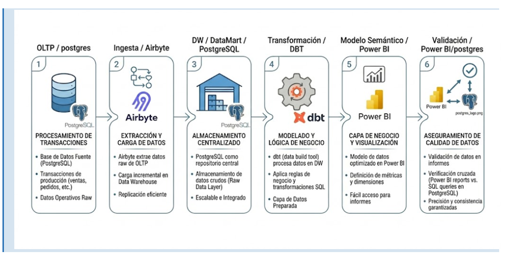

Arquitectura e Ingesta
5. Arquitectura BI implementada
La solucion separa fisicamente la operacion transaccional del consumo analitico. El OLTP PostgreSQL conserva ventas, clientes, productos, produccion, compras y gastos; el DW PostgreSQL expone capas raw, staging y marts; dbt transforma los datos hacia dimensiones y hechos; Power BI consume el esquema marts.
| Capa |
Tecnologia / ubicacion |
Puerto |
Descripcion |
| OLTP |
PostgreSQL 15, contenedor postgres_bi, base muebleria_db |
5433 |
Sistema transaccional normalizado para ventas, produccion, materiales y gastos |
| Raw |
PostgreSQL DW, esquema raw |
5434 |
Replica o carga cruda de tablas origen para preservar trazabilidad |
| Staging |
dbt, transform/models/staging |
- |
Limpieza, casteo, renombrado y estandarizacion de campos |
| Marts |
dbt, transform/models/marts |
- |
Modelo estrella con dim_fecha, dim_producto, dim_cliente y fact_ventas |
| Dashboard |
Power BI, Powerbi/S4 Muebleria v1.pbix |
- |
Modelo semantico, medidas DAX y visualizacion interactiva |

5.2 Componentes implementados
| Componente |
Descripcion |
Estado |
Evidencia |
| Base transaccional OLTP |
Tablas normalizadas de ventas, clientes, productos, materiales, produccion y gastos |
Completo |
OLTP-Postgre/base_datos_transaccional.sql |
| Ingesta |
Replicacion hacia raw; documentada como Airbyte/dbt y actualmente soportada por scripts/proyecto |
Parcial |
transform/models/staging/_sources.yml |
| Capa raw |
Fuentes dbt declaradas para ventas, cliente, producto, tipo_cliente, tipo_venta, material, compra y gasto |
Completo para modelado |
sources: raw |
| Capa staging |
Modelos stg_ventas, stg_clientes, stg_productos, stg_tipo_cliente, stg_tipo_venta |
Completo |
transform/models/staging |
| Capa marts |
Dimensiones y hecho central de ventas |
Completo |
transform/models/marts |
| Modelo semantico |
Relaciones 1:* desde dimensiones hacia fact_ventas |
Completo |
Power BI y documentacion del informe |
| Dashboard |
Pestañas DAX, OLAP, Detalle Producto, Detalle Cliente y TT Ventas |
Completo a nivel de archivo PBIX |
Powerbi/S4 Muebleria v1.pbix |
6. Fuente transaccional OLTP
6.1 Estructuras utilizadas
| Tabla OLTP |
Campos principales |
Tipos relevantes |
Uso analitico |
tb_clientes / cliente |
id, tipo_cliente_id, documento, nombre, limite_credito, saldo_pendiente, estado |
SERIAL, VARCHAR, NUMERIC, TIMESTAMPTZ |
Segmentacion retail/mayorista, canal, credito y comportamiento de clientes |
tb_productos / producto |
id, nombre, costo_estandar, precio_venta_retail, precio_venta_mayorista |
SERIAL, VARCHAR, NUMERIC(10,2) |
Rentabilidad y ranking de productos de melamina |
venta |
fecha, cliente_id, producto_id, cantidad, precio_unitario, total_venta, tipo_venta_id |
DATE, INT, NUMERIC(12,2) |
Hecho comercial principal |
detalle_venta |
No se implementa como tabla separada; el detalle esta en cada fila de venta |
- |
Grano por linea de venta |
tb_usuarios / usuario |
id, nombre, email, rol, activo |
SERIAL, VARCHAR, BOOLEAN |
Auditoria y responsable de registro |
6.2 Script SQL de verificacion
SELECT 'cliente' AS tabla, COUNT(*) AS registros FROM transaccional.cliente
UNION ALL
SELECT 'producto', COUNT(*) FROM transaccional.producto
UNION ALL
SELECT 'venta', COUNT(*) FROM transaccional.venta
UNION ALL
SELECT 'usuario', COUNT(*) FROM transaccional.usuario
UNION ALL
SELECT 'material', COUNT(*) FROM transaccional.material;
Resultado esperado para la carga base deterministica:
| Tabla |
Registros esperados |
Observacion |
cliente |
4 |
2 retail y 2 mayoristas |
producto |
4 |
Ropero, Velador, Comoda, Comodin |
venta |
31 |
Ventas de marzo 2026 |
usuario |
4 |
Admin, vendedor, produccion y contador |
material |
9 |
Melamina, accesorios y componentes |
6.3 Verificacion financiera de origen
SELECT
COUNT(*) AS transacciones,
SUM(cantidad) AS unidades,
SUM(total_venta) AS ventas_totales
FROM transaccional.venta
WHERE fecha BETWEEN DATE '2026-03-01' AND DATE '2026-03-31';
| Metrica |
Valor real |
| Transacciones |
31 |
| Unidades |
109 |
| Ventas totales |
S/ 40,730.00 |